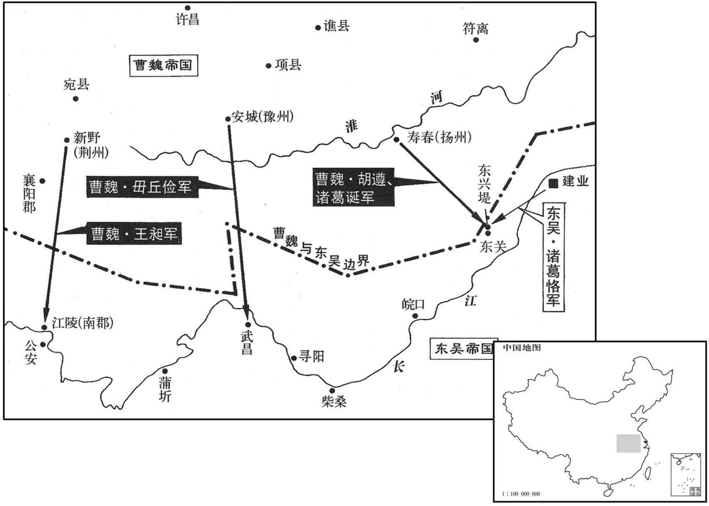

公元252年资治通鉴：本年记事、原文与白话对照
按原书编年位置阅读；追叙和史论不等于本年发生的事件。白话采用所据译本，缺译不以生成译文补齐。
卷75 · 本年记事
公元252年 · 魏烈祖明皇帝嘉平四年
四年〔（壬申、二五二）〕
上传原文的注释括号有异常，字符原样保留；无法可靠划分的段落默认全文显示。
本年事件索引（现代整理）

本年形势与背景参考图
春，正月，癸卯，以司马师为大将军。
春季，正月，癸卯（初二），任命司马师为大将军。
吴主立故太子和为南阳王，使居长沙；仲姬子奋为齐王，居武昌；王夫人子休为琅邪王，居虎林。〔虎林滨大江，吴置督守之。其后孙綝遣朱异自虎林袭夏口，兵至武昌，而夏口督孙壹奔魏，则虎林又在武昌之下。〕
吴王立前太子孙和为南阳王，让他居住在长沙；立仲姬之子孙奋为齐王，居住在武昌；立王夫人之子孙休为琅邪王，居住在虎林。
二月，立皇后张氏，大赦。后，故凉州刺史既之孙，东莞太守缉之女也。〔东莞县，汉属琅邪郡，魏分为郡。沈约曰：晋武帝泰始元年，分琅邪立东莞郡，当是魏既分而复合于琅邪，晋又分也。莞，音官。〕召缉拜光禄大夫。〔为下司马师杀缉张本。〕
二月，魏国立张氏为皇后，实行大赦。皇后是前凉州刺史张既之孙，东莞太守张缉之女。诏令任张缉为光禄大夫。
吴改元神凤，大赦。
吴国改年号为神凤，实行大赦。
吴潘后性刚戾，主疾病，后使人问孙弘以吕后称制故事。左右不胜其虐，〔胜，音升。〕伺其昏睡缢杀之，托吾串恶，〔缢，于赐翻，又于计翻。中恶，暴病而死也。中，竹八翻。〕后事泄，坐死者六七人。〔斯事也，实吴用事之臣所为也。潘后欲求称制，左右小人正当相与从臾为之，安有不胜其虐而缢杀之之理！吴史缘饰，后人遂因而书之云尔。孟子曰：尽信书，不如无书。诚哉！〕
吴国的潘皇后性情刚戾，吴王染病后，潘后派人向孙弘询问西汉吕后行使皇帝权力之事。左右之人不堪忍受她的虐待，乘她昏睡之机，把她勒死，又宣称她是暴病而死。后来事败露，犯罪被杀的有六七人。
吴主病困，召诸葛恪、孙弘、滕胤及将军吕据、侍中孙峻入卧内，属以后事。〔属，之欲翻。〕夏，四月，吴主殂。〔年七十一。〕孙弘素与诸葛恪不平，惧为恪所治，〔治，直之翻。〕秘不发丧，欲矫诏诛恪；孙峻以告恪。恪请弘咨事〔谋事曰咨。〕于坐中杀之。坐，徂卧翻。〕乃发丧，谥吴主曰大皇帝。〔沈约曰：谥大，谥法所不载。〕太子亮即位。〔孙亮，字子明，权少子也，即位时，年十岁。〕大赦，改元建兴。闰月，以诸葛恪为太傅，滕胤为卫将军，吕岱为大司马。恪乃命罢视听，息校官，〔吴主权置校官，典校诸官府及州郡文书，专任以为耳目。今息校官，即所谓罢视听也。〕原逋责，除关税，〔古者关讥而不征，后世始征之，关有税，非古也，除之是也。〕崇恩泽，众莫不悦。恪每出入，百姓延颈思见其状。
吴王病情危重，召诸葛恪、孙弘、滕胤以及将军吕据、侍中孙峻等人入卧室内，嘱托后事。夏季，四月，吴王去世。孙弘平素与诸葛恪不和，害怕被诸葛恪整治，于是封锁消息先不发丧，想要假造诏令杀掉诸葛恪；孙峻把此事报告了诸葛恪。诸葛恪请孙弘前来议事，就在座位中把他杀了。然后举行丧礼，为吴王加谥号为大皇帝。太子孙亮即位。实行大赦，改年号为建兴。闰月，任命诸葛恪为太傅，滕胤为卫将军，吕岱为大司马。诸葛恪下令罢免了充作朝廷耳目的各官，原宥拖欠的税赋债务，免除关税，广施恩泽于百姓，众人皆大欢喜。诸葛恪每次出入，百姓们都伸着脖颈想看看他的模样。
恪不欲诸王处滨江兵马之地，〔处，昌吕翻。〕乃徙齐王奋于豫章，琅邪王休于丹阳。〔奋、休，皆吴主亮之兄也。〕奋不肯徙，恪〔【章：甲十六行本「恪」上有「又数越法度」五字；乙十一行本同；退斋校同；张校同，云无注本亦无此五字。】〕为笺以遗奋曰：〔遗，于季翻。〕「帝王之尊，与天同位，是以家天下，臣父兄；仇雠有善，不得不举，亲戚有恶，不得不诛，所以承理物，先国后家，〔先、后，皆去声。〕盖圣人立制，百代不易之道也。昔汉初兴，多王子弟，至于大强，辄为不轨，上则几危社稷，〔谓吴、楚七国。淮南、济北、燕、广陵也。王，于况翻。几，居希翻。〕下则骨肉相残，〔谓如广川王去之类。〕其后惩戒以为大讳。自光武以来，诸王有制，惟得自娱于宫内，不得临民，于与政事，其与交通，皆有重禁，〔光武科，禁藩王不得交通宾客。干与，读曰预。〕遂以全安，各保福祚，此则前世得失之验也。大行皇帝策勤渠，科禁严峻，其所戒敕，无所不至。诚欲上安宗庙，下全诸王，各早就国，承〔【章：甲十六行本作「使百世相承」五字；乙十一行本同；孔本同；熊校同。】〕无凶国害家之悔也。〔书洪范曰：凶于而国，害于而家。「承」，当作「永」。〕大王宜上惟太怕顺父之志，〔周太王三子，长曰太伯，次曰仲雍，次曰季历。季历之子曰昌，有圣德，太王欲传国季历以及昌，太伯、仲雍遂逃之荆蛮，让国季历以成父之志。惟，思也。〕中念河间献王、东海王强恭顺之节，〔汉河间献王德，于武帝兄也；东海王强，于明帝异母兄也。二王之事二帝，极为恭顺；事并见汉纪。〕下存前世骄恣荒乱之王以为警戒。而闻顷至武昌以来，多违诏敕，不拘制度，擅发诸将兵治护宫室。〔治，直之翻。〕又左右常从有罪过者，当以表闻，公付有司；而擅私杀，事不明白。〔吴诸王有常从吏兵，置常从督以领之。明，颢也；白，奏也；谓不显奏其罪而擅杀之也。从，才用翻。〕中书杨融，亲受诏敕，所当恭肃，乃云『正自不听禁，〔谓不听禁约也。〕当如我何！』闻此之日，子大惊怪，莫不寒心。里语曰：『明鉴所以照形，古事所以知今。』大王宜深以鲁王为戒，〔谓鲁王霸也。〕改易其行，〔行，下孟翻。〕战战兢兢，尽礼朝廷，如此，则无求不得。若弃忘先帝法教，怀轻慢之心，臣下宁负大王，于敢负先帝遗诏；宁为大王所怨疾，岂敢忘尊主之威而令诏敕不行于藩臣邪！向使鲁王早纳忠直之言，怀惊惧之虑，〔惊，当作兢。〕则享祚无穷，岂有灭亡之祸哉！夫良药苦口，唯病者能甘之；忠言逆耳，唯达者能受之。今者恪等慺慺，〔慺，卢侯翻。懁懁，恭谨貌。〕欲为大王除危殆于萌牙，〔为，于伪翻。〕广福廌之基原，是以不自知言至，〔至，极也，切也。〕愿蒙三思！」王得笺，惧，遂移南昌。〔南昌县，豫章郡治所。〕
诸葛恪不想让各位王公居住在江边兵马要塞之地，于是让齐王孙奋迁徙到豫章，让琅邪王孙休迁徙到丹阳。但孙奋不肯迁徙，又多次触犯国家法度，诸葛恪就给孙奋写信说：“帝王的尊贵与上天同一地位，因此以天下为家，以父兄为臣；仇人有善行，不得不举荐，亲戚有恶迹，也不得不诛杀；就这样顺承天命治理万物，以国为先，以家为后，这是圣人所立的制度，是百世不变的法则。当初汉代刚刚举起之时，封了许多子弟为王。他们势力强大后，就开始作乱图谋不轨，上则几乎危害国家，下则兄弟之间骨肉相残，其后加以惩罚戒备，认为诸王势力加强是国家之大忌。自光武帝以来，分封诸王有一定制度，只允许他们在宫内自娱自乐，不得统治百姓和参与政事，与宾客交往，都有严格的禁令；这样才得以保全安定，各自安享福禄，这就是前代得失的经验教训。先帝以古代的经验教训作为今日之借鉴，为防止作乱的萌芽，考虑到后世的长治久安，所以在卧病之日，就分散诸王，让他们及早到达各自的封国，诏令恳切，禁令严峻，所告诫的各方面，无所不至。这样做的目的，实际上是要上使国家安定，下则保全诸王，让他们及早回到封国，使百世后的子孙能继承祖宗基业，不会出现危害国家和家族的悔恨之事。对待父辈，您应该常常想着周朝太伯顺从其父的志向；对待兄弟，您应该常常念及汉朝河间献王和东海王恭顺兄长的节操；对待自己，您应该把前世那些骄横恣肆荒乱无耻之王记在心中以为警戒。但是我听说您自到武昌以来，多次违背朝廷诏令，不受制度约束，擅自调兵遣将来管理保护您的宫室。另外您的左右亲随有犯罪之人，您应当上表禀告，并把他们交付有关官员秉公处理，但是您却擅自私下杀死，而不把事情明确报告。中书杨融，亲自接受诏令，您应当恭恭敬敬地听他的意见，但您却说：‘我就是不听禁约，能把我怎么样！’听到您这个话，我们上上下下都十分震惊，没一个不感到寒心的。俗语说：‘明镜用来照形，知古为了知今。’您应该深刻地记住鲁王的教训，改变目前的言行，战战兢兢，小心谨慎，尽心地恭敬朝廷，这样，您的要求都能得到满足。如果背弃忘却先帝的教导，对朝廷怀有轻视傲慢之心，那么我宁肯辜负您，也不敢辜负先帝的遗诏；宁肯被您所怨恨仇视，又怎敢忘记尊奉主上的权威而让诏令不能在藩臣中实行？以前如果鲁王及早地听纳忠直之言，对朝廷怀着惊惧恭敬之心，就能无穷地享受福禄，怎会有灭亡的灾祸？良药苦口，只有病人才会甘之若饴；忠言逆耳，只有通达之人才能接受。如今我们这些人恭恭敬敬，想为您解除危险祸患于萌芽之中，扩展您富贵福禄的基础，因此不知不觉地说得十分尖锐，希望您三思！”齐王收到信后，非常惧怕，随即就迁徙到南昌。
初，吴大帝筑东兴堤以巢湖，〔吴主权黄龙二年筑东兴堤。〕其后入寇淮南，败，以内船，遂废不复治。〔谓正浆二年芍陂之败也。遏巢湖所以利舟师，而反为湖内之船所败，故废而不治。复，扶又翻。治，直之翻。〕冬，十月，太傅恪会众于东兴，更作大堤，左右结山，侠筑两城，〔今栅江口有两山，濡须山在和州界，谓之东关；七宝山在无为军界，谓之西关。两山对峙，中为石梁，凿石通水。唐志：庐州巢县东南四十里，有故东关。侠，读曰夹：古者侠、夹二字通。汉灵帝光和二年华山亭碑，其文有云「吏卒侠路」，晋、宋书诸王有侠毂队，皆以夹为侠。〕各留千人，使将军全端守西城，都尉留略守东城，〔留，姓也。汉功臣表有强园〔圉〕侯留盻。姓谱曰：卫大夫留封人之后，汉末避地会稽，遂居东阳，为郡豪族。〕引军而还。
当初，吴大帝孙权建筑东兴堤用以遏止巢湖之水外流，后来进攻淮南，战败，就把巢湖用来停泊船只，于是废弃大堤不再修筑。冬季，十月，太傅诸葛恪会集众人于东兴，重新建筑大堤，连结左右两座山，山上建筑了两座城，各留千人把守，派将军全端守西城，都尉留略守东城，然后率军返回。
镇东将军诸葛诞言于大将军师曰：「庈因吴内侵，使文舒逼江陵，仲恭向武昌，〔王昶，字文舒，毌丘俭，字仲恭。〕以羁吴之上流；然后简精卒攻其两城，比救至，可大获也。」〔比，必寐翻。〕是时征南大将军王昶、征东将军胡遵、镇南将军毌丘俭等各献征吴之计。朝廷以三征计异，〔汉置四征将军，谓征东、征西、征南、征北也。其后又置四镇将军，有功进号，则自镇为征。毌丘俭方为镇南，而曰三征，史概言之。〕诏问尚书傅嘏。嘏对曰：「议者或欲泛舟径济，横行江表；或欲四道并进，攻其城垒；或欲大佃疆埸，〔佃，读曰田。〕观衅而动；诚皆取贼之常计也。然自治兵以来，出入三载，非掩袭之军也。〔治，直之翻。〕贼之为寇，几六十年矣，〔自汉建安十三年赤壁之战，吴、魏始为寇敌；至是年凡五十五年，吴、魏通者三年耳。几，居希翻。〕君臣相保，吉凶共患，又丧其元帅，〔丧，息浪翻。〕上下忧危，设令列船津要，坚城据险，横行之计，其殆难捷。今道壤之守，与贼相远，贼设罗落，又特重密，〔谓设烽燧，远候望，以罗落道面也。罗，布也。落，与络同，联络也。庄子曰：牛马淦足，是谓天。落马首，穿牛鼻，是谓人。用此落字。重，直龙翻。〕间谍不行，〔间，古苋翻；下同。谍达协翻。〕耳目无闻。夫军无耳目，校察未，详，而举大众以临巨险，此为希幸徼功，〔徼，一遥翻。〕先战而后求胜，非全军之长策也。唯有进军大佃，最差完牢；可诏昶、遵等择地居险，审所错置，〔错，仓故翻。〕及令三方一时前守。夺其肥壤，使还塉，秦昔翻。〕兵出民表，寇钞不犯，二也；〔钞，楚交翻。〕招怀近路，降附日至，三也；降，户江翻。〕罗落远设，间构不来，四也；贼退其守，罗落必浅，佃作易立，五也；〔易，以豉翻。〕坐食积谷，士不运输，六也；衅隙时闻，讨袭速决，七也；凡此七者，军事之急务也。不据则贼擅便资，据之则利归于国，不可不察也。夫屯垒相偪，形势已交，智勇得陈，巧拙得用，策之用知得失之计，角之而知有余灴足，虏之情伪，将焉所逃！〔焉，于虔翻。〕夫以子敌大，则役烦力竭；以贫敌富，则敛重财匮。〔敛，力赡翻。〕故曰：『敌逸能劳之，饱能饥之』，〔孙武子兵法之言也。〕此之谓也。」司马师不从。
镇东将军诸葛诞对大将军司马师说：“如今趁着吴国深入内地侵略，可以派王昶逼取江陵，派丘俭攻向武昌，以羁绊住吴国上游的兵力，然后挑选精锐兵力进攻其两城，等到他们救兵赶到，我们已大获全胜了。”当时征南大将军王昶、征东将军胡遵、征南将军丘俭等人各自都献了征伐吴国的计策。朝廷因三位将领计策不同，于是下诏征询尚书傅嘏的意见。傅嘏回答说：“献计者有人主张乘船直接渡江，横行于江南；有人主张分四路同时进攻，攻占其城垒；也有人主张屯兵边境，平时耕作土地，然后乘其内乱之机发动进攻；这的确都是攻取敌国的常用之计。但是自从我们训练集结伐吴部队以来，前后已有三年，敌人早已知晓，已经不是一支可以出其不意进行偷袭的军队了。吴国与我为敌，将近六十年了，这期间他们君臣团结，同甘苦共患难，最近又丧其统帅，君臣上下心存忧惧危难，加强戒备，假使他们下令在重要渡口排列战船，加固城池占据险要，那么我们横行大江之上的计策，恐怕就难以奏效了。如今边境的守军，与敌军相隔甚远，敌军设置的观察联络哨所，又数量众多戒守严密，我们的间谍不能进入，得不到任何消息。如果军队没有耳目消息，侦察不够详密，却冒然发重兵以面临巨大的危险，这就是怀着侥幸心理以邀取成功，企图先战而后求取胜利，这不是保全军队的良策。只有屯兵边境的计策最为完备牢靠；可以先命令王昶、胡遵选择地方驻扎在形势险要之地，审察他们的安排布置，命令三方面同时进驻守地。第一，要夺取肥沃的土地，让敌人退回到贫瘠的土地。第二，兵士到百姓中间，不许欺压劫掠。第三，在附近区域实行招抚怀柔政策，使投降归附之人每天来到。第四，从远处开始设置侦察联络哨，使间谍不能过来。第五，敌兵退守之后，侦察联络哨必然不能深入，耕作土地也不容易开展。第六，军队就地食用积储的粮食，不用分出兵力运输。第七，敌军内部矛盾混乱情况可以及时得到消息，能迅速作出征讨突袭的决断。以上七个方面，是军事行动的当务之急。不掌握这些，敌军就会独占便利的资财；掌握这些，利益就会归于我国，所以不可以不明察。两军营垒相互逼近，两军的阵势也已经相互明了，智慧勇敢得以施展，各种巧拙之计也得以运用，施展谋略能了解其得失，相互较量也能知道长短优劣，敌军情况的真伪，将向哪里藏匿？以小敌大，就会劳役频繁国力衰竭；以贫敌富，就会加重税敛财力匮乏。因此兵法说：‘敌人安逸能使之烦劳，敌人饱足能使之饥饿。’说的就是这个意思。”但是司马师不采纳这个意见。
十一月，诏王昶等三道击吴。十二月，垩昶攻南郡，毌丘俭向武昌，胡遵、诸葛诞率众七万攻东兴。甲寅，吴太傅恪将兵四万，晨夜兼行，救东兴。胡道等敕诸军作浮桥以渡，陈于堤上，〔陈，读曰阵。〕分兵攻两城；城在高峻，不可卒拔。〔卒，读曰猝。〕诸葛恪使冠军将军丁奉与吕据、留赞、唐咨为前部，从山西上。〔上，时掌翻；下同。〕奉谓诸将曰：「今诸军行缓，若贼据便地，则难以争锋，我请趋之。」〔趋，七喻翻。〕乃辟诸军使下道，〔辟，读如辟。辟诸军使避路而己军前进也。〕奉自率麾下三千人径进。时北风，奉举帆二日，即至东关，遂据徐塘。〔徐塘，盖近东关。〕时天雪，寒，胡遵等方置酒高会。奉见其前部兵少，谓其下曰：「取封侯爵赏，正在今日！」乃使兵皆解铠，去矛戟，〔去，羌吕翻。〕但兜鍪刀楯，惭身缘堨。〔兜鍪，首铠。鍪，莫侯翻。楯，食尹翻。惭，鲁果翻。堨，阿葛翻。〕魏人望见，大笑之，不即严兵。吴兵得上，便鼓噪，斫破魏前屯，吕据寺继至；魏军惊扰散走，争渡浮桥，桥坏绝，自投于水，更相蹈藉。〔更，工衡翻。〕前部督韩综、乐安太守桓嘉等皆没，死者数万。综故吴叛将，〔综叛吴事见七十卷明帝太和元年。〕数为吴害，〔数，所角翻。〕吴大帝常切齿恨之，诸葛恪命送其首以其自白大帝庙。获车乘、牛马、骡驴各以千数，〔乘，绳证翻。骡，卢戈翻。〕资器山积，振旅而归。
十一月，诏令王昶等三路兵马袭击吴国。十二月，王昶进攻南郡，丘俭进攻武昌，胡遵、诸葛诞率七万大军攻打东兴。甲寅（十九日），吴国太傅诸葛恪率兵四万，日夜兼程，救援东兴。胡遵等人命令各军作浮桥渡水，陈兵于大堤之上，分兵攻打两城；城在高峻险要之处，不能很快攻破。诸葛恪派冠军将军丁奉和吕据、留赞、诏咨等人为前锋，从山的西面攻上。丁奉对各将领说：“现在各部队行动迟缓，如果魏兵占据有利地形，就难以与他争锋交战了，我请求快速攻上。”于是让各路军马从道路上避开，丁奉亲自率领属下三千人快速突进。当时正刮北风，丁奉扬帆行船两天就到达了东关，随即占据了徐塘。当时漫天飘雪，十分寒冷，胡遵等人正在聚会饮酒。丁奉见魏军前部兵力稀少，就对手下人说：“求取封侯赏爵，正在今天。”于是让士兵们都脱下铠甲，丢掉长矛大戟，只戴着头盔拿着刀和盾牌，裸身爬上堤堰。魏兵看见他们，都大笑不止，而不立即整兵对敌。吴兵爬上之后，立即击鼓呐喊，袭击攻破魏军前部营垒，吕据等人也相继赶到；魏军惊恐万状四散奔逃，争相抢渡浮桥，浮桥毁坏断裂，魏兵自己跳入水中，互相践踏着逃跑。魏军前部督韩综、乐安太守桓嘉等人都沉没在水中，死者数万人。韩综过去是吴国的叛将，多次为害吴国，吴大帝孙权常常痛恨得咬牙切齿，诸葛恪命人送回韩综首级以祭告大帝庙。缴获魏军的车辆、牛马、骡驴等都数以千计，资材器物堆积如山，凯旋而归。
初，汉姜维寇西平，〔见上卷喜平二年。〕获中郎将郭随，〔随，偏考字书无其字。又考三国志三少帝纪作「郭修」，蜀志张嶷传亦作「郭修」，裴松之注亦云：修，字孝先。费祎传作「郭循」，后主传亦然。今三国志旧本，凡书「循」者多从「随」，字皆作「随」即「修」字之误也，后人以「随」字无所出，又改「人」为「彳」，遂为「循」字耳。盘洲洪氏曰：自东汉以来，凡「盾」字皆作「随」字。又曰汉隶「循」、「修」颇相近，隶法「潃」、「潃」只争一画。〕汉人以为左将军。随欲刺汉主，不得亲近，每因上寿，且拜且前，〔刺，七亦翻。近，其靳翻。上，时掌翻。〕为左右所遏，事辄不果。〔为下随杀费祎张本。〕
当初，蜀汉的姜维进攻西平，俘获了中郎将郭循，蜀汉任命他为左将军。郭循想要刺杀汉后主，却没接近的机会。他常常借上寿之机，一边跪拜，一边往前靠近，却被左右侍卫所遏止，刺杀的目的未能达到。